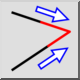
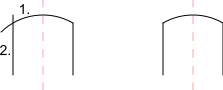

Mindkettő vágása
Eszköztár / ikon:


Menü: Módosítás > Mindkettő vágása
Rövidítés: T, M
Parancsok: trim2 | extend2 | tm
Ez egy automatikus fordítás.
Eszköztár / ikon:


Két vonalat, ívet vagy ellipszist vág vagy nyújt a közös metszéspontjukig.
